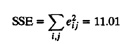
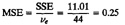
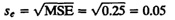
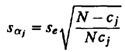
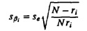
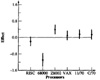
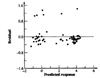
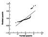
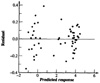
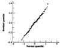

| Previous | Table of Contents | Next |
| TABLE 21.22 Error Computation in the RISC Execution Time Study | ||||||
|---|---|---|---|---|---|---|
| Workload | RISC-I | 68000 | Z8002 | VAX- 11/780 | PDP- 11/70 | C/70 |
| E-String Search | 0.01 | 1.36 | -0.36 | -0.16 | -0.38 | 0.02 |
| F-Bit Test | -0.48 | 1.11 | -0.20 | -0.08 | -0.03 | 0.15 |
| H-LinkedList | -0.04 | 1.07 | -0.23 | -0.24 | -0.10 | 0.03 |
| K-Bit Matrix | -0.37 | 1.13 | -0.24 | -0.18 | -0.12 | 0.26 |
| I-Quick Sort | -0.33 | 1.18 | -0.20 | -0.14 | -0.12 | 0.10 |
| Ackermann(3,6) | -0.03 | — | -0.16 | -0.11 | -0.17 | — |
| Recursive Qsort | -0.16 | — | 0.03 | -0.08 | — | -0.38 |
| Puzzle (Subscript) | -0.15 | — | -0.10 | -0.13 | -0.29 | 0.05 |
| Puzzle (Pointer) | -0.10 | 1.42 | -0.32 | -0.27 | -0.15 | -0.11 |
| SED (Batch Editor) | -0.04 | — | 0.02 | -0.28 | -0.35 | 0.04 |
| Towers Hanoi (18) | -0.10 | — | -0.06 | -0.13 | -0.09 | -0.23 |

The errors have 60 - 1 - 5 - 10, or 44, degrees of freedom since 16 independent parameters (µ, αj, and βi) have been computed. Notice that only 5 of 6 of the αj’s are independent. Similarly, only 10 of the 11 βi’s are independent. The mean square error is

The standard deviation of errors is

The standard deviation of αj is obtained by expressing it as a weighted sum of the observations. The formula is

where cj is the number of observations in column cj. This formula can be derived by expressing αj as a linear combination of eij’s and summing the variance of each term. The procedure is similar to that discussed in Section 20.8 on one-factor experiments with unequal sample sizes. Similarly, the standard deviation of the row effects is

where ri is the number of observations in the ith row. The confidence intervals for various processor effects are shown in Figure 21.6. The pairs that are significantly different from each other can be easily seen from this figure. Notice also that the 68000 processor has a larger confidence interval than other processors since there are fewer observations in its column.

FIGURE 21.6 Confidence intervals for processor effects in the RISC execution time study.

FIGURE 21.7 Plot of the residuals versus predicted response for the RISC execution time study.
A plot of residuals versus predicted response is shown in Figure 21.7. There are a few large positive errors. From Table 21.22, we notice that almost all large positive errors are in the second column (68000). This shows that the observations in this column do not follow the model. In general, if a column (or row) has a large number of missing values, it is better to exclude the column. The procedure for missing values should be used only for one or two missing values.
A normal quantile-quantile plot for the residuals is shown in Figure 21.8. Again, the large positive errors in the 68000 data are responsible for this deviation from normality.

FIGURE 21.8 Normal quantile-quantile plot for the residuals of the RISC execution time study.

FIGURE 21.9 Plot of the residuals versus predicted response for the RISC execution time study without the 68000.
If we remove the 68000 column, the residual versus predicted response and the normal quantile-quantile plots based on the remaining data (which results in a model with different values of effects) are shown in Figures 21.9 and 21.10. These figures do not have the problems encountered in Figures 21.7 and 21.8.
In this case study, the code sizes for various processors were also measured. These sizes are listed in Table 21.23. Again, one can analyze the data using a multiplicative two-factor model with missing values (see Exercise 21.4). The confidence intervals for log effects of processors are shown in Figure 21.11.
The key results related to the analysis of two-factor full factorial designs without replications are summarized in Box 21.1.

FIGURE 21.10 Normal quantile-quantile plot for the residuals of the RISC execution time study without the 68000.
| TABLE 21.23 Measured Data for the RISC Code Size Study | ||||||
|---|---|---|---|---|---|---|
| VAX- | PDP- | |||||
| Workload | RISC-I | 68000 | Z8002 | 11/780 | 11/70 | C/70 |
| E-String Search | 140 | 112 | 126 | 98 | 112 | 98 |
| F-Bit Test | 120 | 144 | 180 | 144 | 168 | 120 |
| H-Linked List | 176 | 123 | 141 | 211 | 299 | 141 |
| K-Bit Matrix | 288 | 317 | 374 | 288 | 374 | 317 |
| I-Quick Sort | 992 | 694 | 1,091 | 893 | 1,091 | 893 |
| Ackermann(3,6) | 144 | — | 302 | 72 | 86 | 86 |
| Recursive Qsort | 2,736 | — | 1,368 | 1,368 | 1,642 | 1,642 |
| Puzzle (Subscript) | 2,796 | 2,516 | 1,398 | 1,398 | 1,398 | 1,678 |
| Puzzle (Pointer) | 752 | — | 602 | 451 | 376 | 376 |
| SED (Batch Editor) | 17,720 | — | 17,720 | 10,632 | 8,860 | 8,860 |
| Towers Hanoi (18) | 96 | — | 240 | 77 | 96 | 67 |
Adapted with permission from Patterson and Sequin (1982).
| Previous | Table of Contents | Next |
){kind=link}
){kind=link}
){kind=link}
){kind=link}
){kind=link}
){kind=link}
){kind=link}
){kind=link}
){kind=link}
){kind=link}